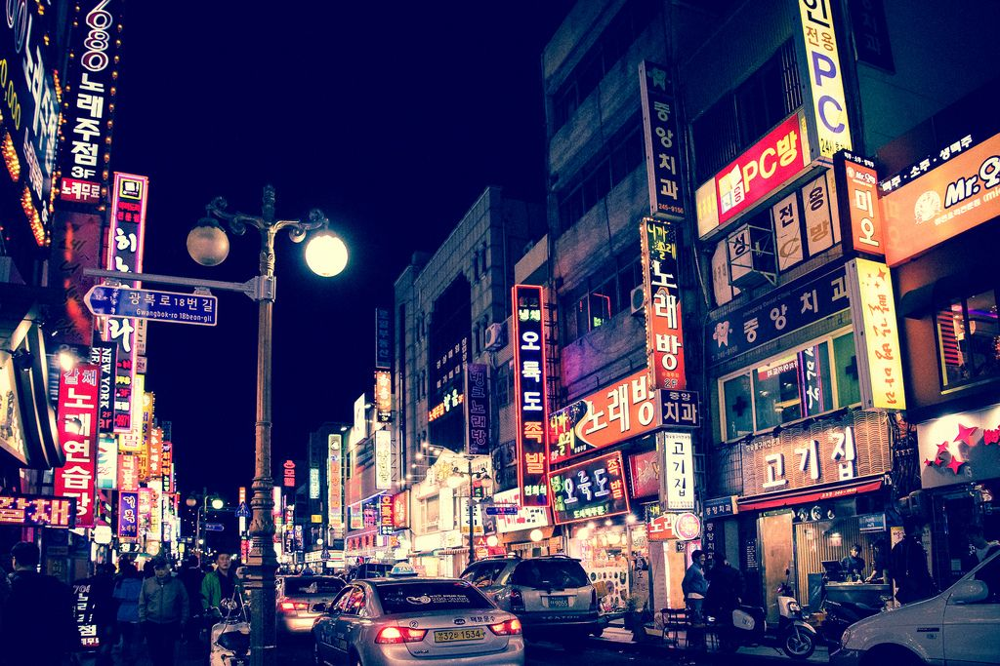
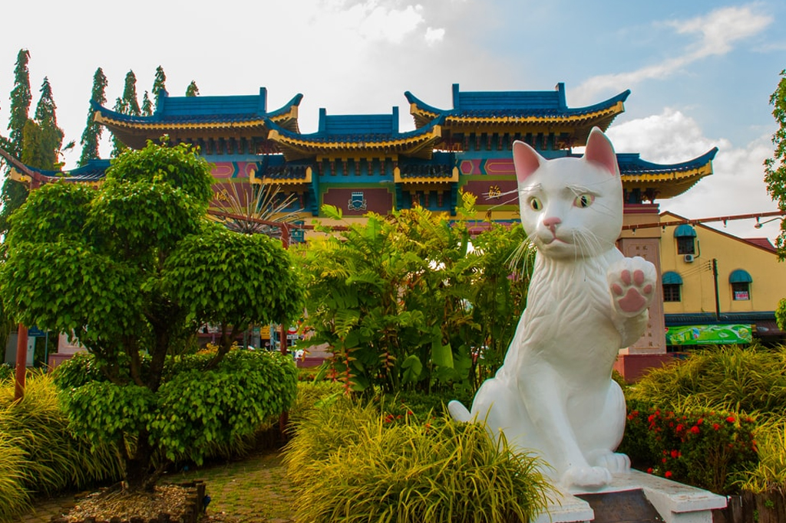
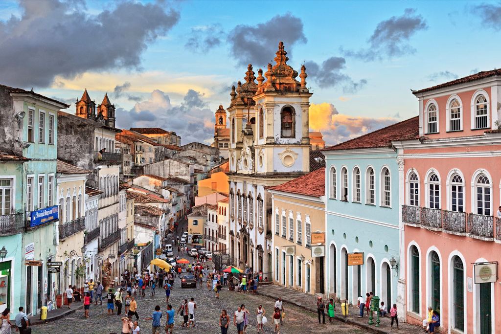

Featured Destinations

Busan
South Korea
Home to majestic mountains, glistening beaches, steaming hot springs and fantastic seafood, South Korea’s second-largest city is a rollicking port town with tonnes to offer.
EXPLORE

Kuching
Malaysia
Kuching is known for being the home of a number of indigenous groups such as the Iban and the Dayaks, and people flock here to learn more about the unique culture found in this part of Malaysia.
EXPLORE

Salvador
Brazil
Salvador, the capital of Brazil’s northeastern state of Bahia, is known for its Portuguese colonial architecture, Afro-Brazilian culture and a tropical coastline.
EXPLORE